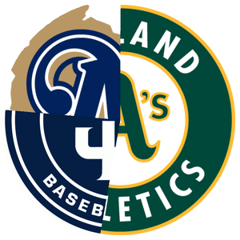
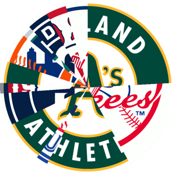
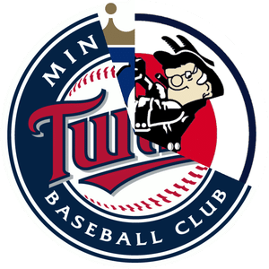
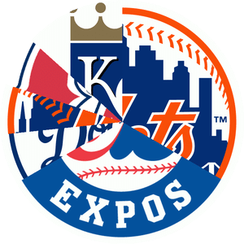
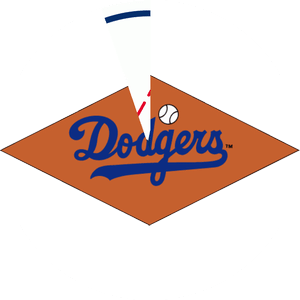
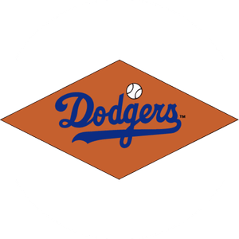
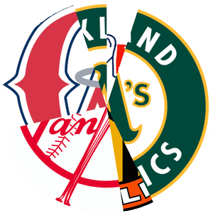

Authors: Jason Juang, Erin Rhode, Harvey Jones
Each image represents a Major League Baseball player. The players on the left are batters, and the players on the right are pitchers. The numbers are decimal ASCII values that encode, respectively, the player's batting average or earned run average. The pie chart shows which teams the player played for, with pie slices proportional to the number of seasons he played for that team. (Seasons in which the player played for multiple teams are split evenly, regardless of the number of games played.) Each player is uniquely identifiable from this information.
The images are laid out in pairs. Each batter/pitcher pair never faced each other in the regular season or postseason, but faced each other in exactly one All-Star Game.
Find the year of the All-Star Game in which the players met. Take the last two digits, and convert that value to an ASCII character to spell RIPSEWELL1946HR.
In the 1946 All-Star Game, the only player to hit a home run off of Rip Sewell was TED WILLIAMS, in what turned out to be his only career plate appearance versus Sewell.
| Batter | Pitcher | Year | Letter | ||||
|---|---|---|---|---|---|---|---|
| Teams | Player | BA | Teams | Player | ERA | ||
| Tony Pena | .260 |  | Rollie Fingers | 2.90 | 1982 | R | |
| Willie Mays | .302 | Sparky Lyle | 2.88 | 1973 | I | ||
|  | Rickey Henderson | .279 | Bruce Sutter | 2.83 | 1980 | P | |
| Rod Carew | .328 | Atlee Hammaker | 3.66 | 1983 | S | ||
|  | Harmon Killebrew | .256 | Steve Carlton | 3.22 | 1969 | E | |
|  | Hubie Brooks | .269 | Tom Henke | 2.67 | 1987 | W | |
| Carlos May | .274 | Phil Niekro | 3.35 | 1969 | E | ||
| Joe Morgan | .271 | Mark Fidrych | 3.10 | 1976 | L | ||
| Carlton Fisk | .269 | John Montefusco | 3.54 | 1976 | L | ||
| Stan Musial | .331 | Mel Parnell | 3.50 | 1949 | 1 | ||
| Yogi Berra | .285 | Larry Jackson | 3.40 | 1957 | 9 | ||
|  | Pee Wee Reese | .269 | Bob Lemon | 3.23 | 1952 | 4 | |
|  | Jackie Robinson | .311 | Sandy Consuegra | 3.37 | 1954 | 6 | |
|  | Reggie Jackson | .262 | Bob Gibson | 2.91 | 1972 | H | |
| Willie Wilson | .285 | Mario Soto | 3.47 | 1982 | R | ||